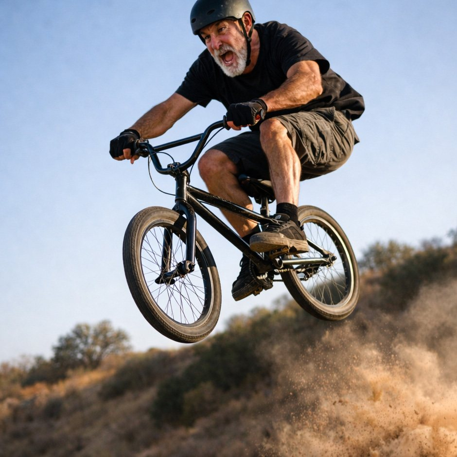
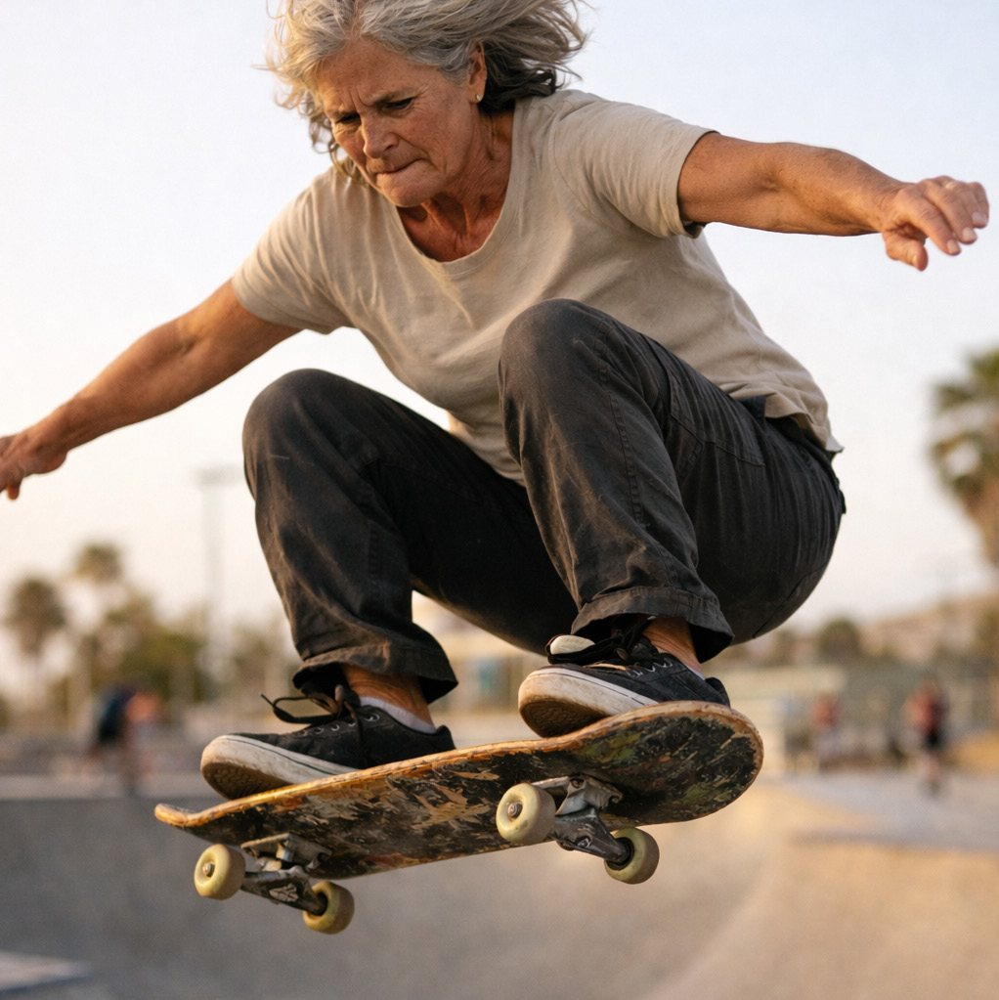
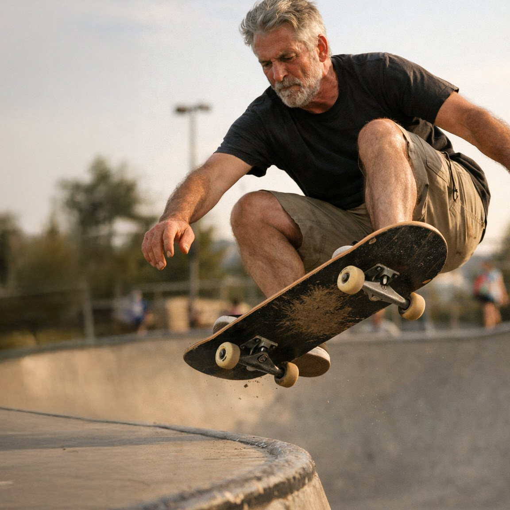

Zeker nietGeld door de afvoer?
Een badkamer waar u bang in bent, is weggegooid geld.
Hier bedankt u nu voor, ook al was u als jongeling de ster. Toch voelt u zich daarom niet oud.
De hoogtepunten van vandaag

Gestoord
Gestoord
GestoordU kijkt en denkt maar één ding: dat is gestoord. Dat zou ik nooit doen.
Gezond verstand, zegt u.
 Live · uw badkamer
Live · uw badkamer
Elke ochtend over die hoge rand, op een natte vloer. Met wat verbeelding: dezelfde halsbrekende toeren als op de skatebaan.
Ook in uw badkamer beter geen acrobatiek. Beter gewoon makkelijk en comfortabel.Gewoon gezond verstand, zeggen wij.
Wat badkamergevoel is, wat het zou moeten zijn, en wat het zeker niet mag zijn.
Een badkamer waar u bang in bent, is weggegooid geld.

Veilig en comfortabel, met z'n tweeën.

Geen sprong over de rand. Geen acrobatiek.


Zo doen we dat
Claude, de zaakvoerder, komt zelf bij u thuis voor het gratis adviesgesprek. Geen tussenpersoon: u praat meteen met de man die uw badkamer kent.

In amper één dag vervangen we ze door een veilige cabine of inloopdouche. Zo overleeft u uw badkamer zonder blessures. Zonder gedoe.

terug voor 65-plussers, via de Vlaamse aanpassingspremie.
Er geldt een inkomensgrens. Vraag ernaar tijdens het adviesgesprek.
Snel•Veilig•Betaalbaar
[testimonial van een klant — wordt aangeleverd]
[testimonial spoedarts over badkamerongevallen — te zoeken]
Bel voor een gratis adviesgesprek bij u thuis.
0493 33 39 88Liever mailen? info@ckservice.be